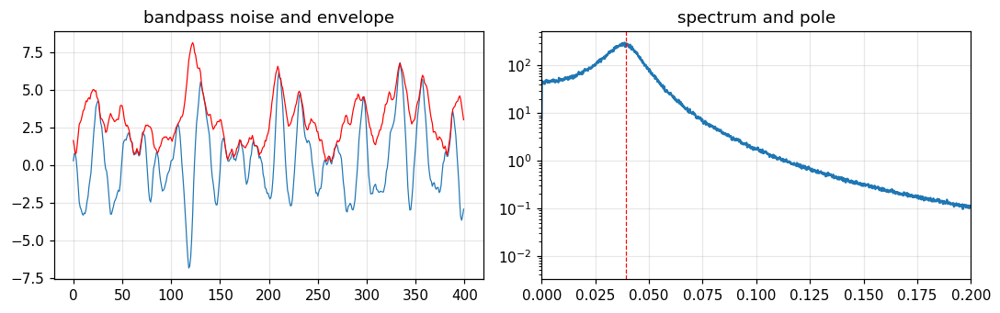
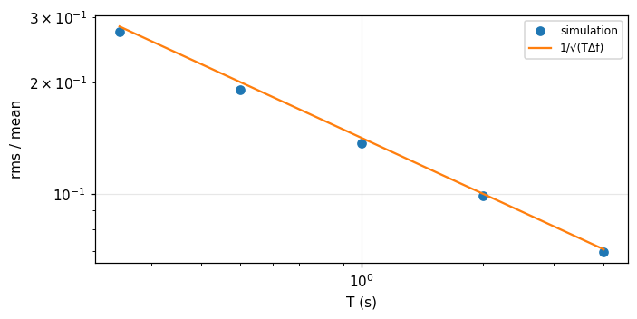
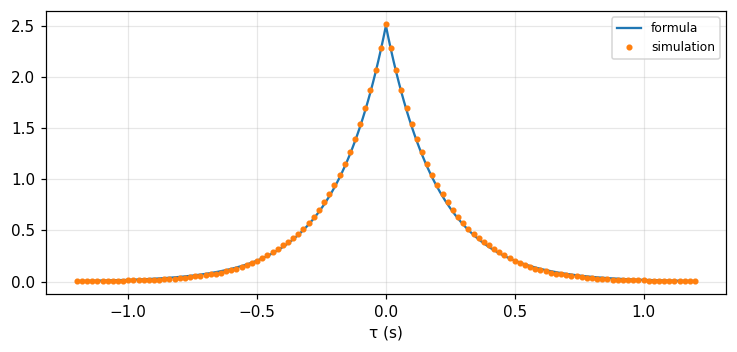

Random processes, power spectra and noise
From random digits and noise through filters (Bracewell) to stationary processes, autocorrelation, power spectral density, linear systems, ergodicity, sampling, analytic signals and thermal noise (Barkat).
Lecture (slides) Hands-on with the Jupyter Notebook Self-check quiz
Lecture (slides)
Random processes, power spectra and noise
- Define a random process, its mean and autocorrelation, wide- and strict-sense stationarity, and check them by ensemble simulation.
- Recognise the standard processes: random pulses, periodic, Gaussian, Poisson, Bernoulli, random walk, Wiener, Markov.
- Relate autocorrelation and power spectral density, and compute the output of a linear time-invariant system with random input: S_{yy}=|H|^2S_{xx}.
- Explain why noise through a filter becomes Gaussian, why the envelope is Rayleigh, why square-law detection gives an exponential distribution, and why the precision of noise power measurement is 1/\sqrt{T\Delta f}.
- Use ergodicity, the sampling theorem for random processes, the Hilbert transform and analytic signals, and thermal noise.
Use the buttons, the dots or the ← → keys to move between slides.
Definitions, first- and second-order statistics, stationarity
- A random process and its ensemble
- Mean, autocorrelation, stationarity
- Properties of correlation functions
Random signals in physics
The whole of physics is permeated by naturally occurring random phenomena. Bracewell opens with a record of the extragalactic radio source Cygnus A passing through the beam of a radio telescope: the source has at least two parts, but whether there is a broader, weaker halo cannot be revealed because of unwanted random wiggles; the wanted radiation itself is random noise (chapter 17, pp. 445 to 447). Fluctuations often show characteristic behaviour independent of their precise physical cause, and this chapter is about those universal phenomena.
Definition of a random process
A random process may be viewed as a collection of random variables with time t as a parameter running through all real numbers; formally X(t) maps each element of the sample space into a function of time. The set of sample functions with their probabilities is the ensemble, a sample function is denoted x(t) (Barkat, section 3.1, p. 141). Fixing t=t_0 makes X(t_0) a random variable. Example: X(t)=A\cos(\omega t+\Theta) with \Theta uniform on (0,2\pi); the variation is due to phase only, yet with the phase fixed the sample function is deterministic (p. 142).
Four types of process
| State | Time | Name |
|---|---|---|
| Continuous | Continuous | Continuous random process |
| Discrete | Continuous | Discrete random process |
| Continuous | Discrete | Continuous random sequence |
| Discrete | Discrete | Discrete random sequence |
(Barkat, p. 143). Bracewell's digit sequence is discrete in both; sinc interpolation turns it into a band-limited continuous process.
First- and second-order distributions
The first-order distribution is F_X(x;t)=P[X(t)\le x], the first-order density f_X(x;t); the second order is the joint distribution of X(t_1) and X(t_2); a complete description needs all orders (Barkat, pp. 143 to 144). Fortunately we are usually interested in processes with regularity so that the first and second orders suffice, including the mean m_x(t)=E[X(t)] and the autocorrelation R_{xx}(t_1,t_2)=E[X(t_1)X(t_2)] (p. 145).
Wide-sense and strict-sense stationarity
If m_x is constant and R_{xx}(t_1,t_2) depends only on \tau=t_1-t_2 then X(t) is wide-sense stationary: R_{xx}(t+\tau,t)=R_{xx}(\tau). It is strictly stationary if all statistics are unchanged by a shift of time origin; strict implies wide-sense but not conversely, since the wide-sense condition constrains only second-order statistics (Barkat, pp. 145 to 146). Example 3.1: X=A\cos(\omega t+\Theta): mean 0 and R_{xx}(\tau)=\tfrac{A^2}2\cos\omega\tau; with A=2, f=1, \tau=0.1: 1.618 by formula and by ensemble simulation, at two different times t.
Example 3.2: coin tossing and random binary transmission
Toss a coin every interval T; X(t)=+1 or -1 in the nth interval according to heads or tails. The mean is 0, the mean square 1. If t_1,t_2 lie in the same interval R_{xx}=1; in different intervals the tosses are independent so R_{xx}=E[X(t_1)]E[X(t_2)]=0 (Barkat, example 3.2, pp. 147 to 149). Measured: same interval (1), different intervals (0); so R_{xx} depends on t_1, not just \tau: not wide-sense stationary. Adding a uniform random shift \Theta in (0,T) gives Y(t)=X(t-\Theta), wide-sense stationary, called random binary transmission, with R_{yy}(\tau)=1-|\tau|/T: at \tau=0.25T it equals 0.75 (at two different t).
Covariance, complex processes, cross-correlation
Two processes are jointly stationary if each is stationary and R_{xy}(t+\tau,t)=R_{xy}(\tau). The covariance function is C_{xx}(t_1,t_2)=E\{[X(t_1)-m_x(t_1)][X(t_2)-m_x(t_2)]\}, and for a complex process Z=X+jY: R_{zz}(t_1,t_2)=E[Z(t_1)Z^*(t_2)] (Barkat, p. 147). Example 3.3: I(t)=X\cos\omega t+Y\sin\omega t, Q(t)=Y\cos\omega t-X\sin\omega t with X,Y zero-mean, uncorrelated, variance \sigma^2: R_{iq}(t+\tau,t)=\sigma^2\sin\omega\tau (p. 152; the printed result has a minus sign, but the book's own intermediate step and the simulation give a plus). With \sigma=1, f=1, \tau=0.1: 0.5878.
Properties of the autocorrelation
- R_{xx}(t_2,t_1)=R_{xx}^*(t_1,t_2); if real it is symmetric about t_1=t_2.
- R_{xx}(t,t)=E[|X(t)|^2]\ge0 and Schwarz's inequality |R_{xx}(t_1,t_2)|^2\le E[|X(t_1)|^2]E[|X(t_2)|^2].
- Nonnegative definite: \sum_i\sum_ja_ia_j^*R_{xx}(t_i,t_j)\ge0.
- For a real wide-sense stationary process: R_{xx}(-\tau)=R_{xx}(\tau), R_{xx}(0)=\sigma_x^2+m_x^2, |R_{xx}(\tau)|\le R_{xx}(0), and R_{xx}(\infty)=m_x^2.
(Barkat, section 3.3, pp. 153 to 155). Cross-correlation: R_{xy}(\tau)=R_{yx}^*(-\tau) and |R_{xy}(\tau)|^2\le R_{xx}(0)R_{yy}(0). Measured with random phase: R(0) = 2 =A^2/2 and |R(\tau)|\le R(0) on a grid.
Self-check, part 1
- Why is coin tossing by intervals not wide-sense stationary, yet adding a random shift makes it so?
- What does R_{xx}(0) equal?
- How do strict and wide-sense stationarity differ?
Hints: R depends on position within an interval, a uniform shift averages the position out; E[X^2]=\sigma^2+m^2; strict constrains all orders.
Some representative random processes
- Random pulses and periodic processes
- Gaussian, Poisson, Bernoulli
- Random walk, Wiener, Markov
A pulse of known shape, random amplitude and arrival time
In radar and sonar a returned signal is X(t)=A\,s(t-\Theta) with independent A and \Theta and deterministic s. The mean E[X(t)]=E[A]\,[s*f_\Theta](t) is the convolution of the pulse with the density of the arrival time, and R_{xx}(t_1,t_2)=E[A^2]\int s(t_1-\theta)s(t_2-\theta)f_\Theta(\theta)d\theta (Barkat, section 3.4.1, pp. 156 to 157). Measured: s=\Pi(t), A uniform on (1,3), \Theta uniform on (0,1): E[X(1.25)] = 0.5 =2\times0.25 and R_{xx}(0.5,0.5) = 4.3333 =E[A^2], by integration and simulation.
Multiple pulses
X(t)=\sum_{k=1}^nA_ks(t-\Theta_k) with 2n independent variables, the A_k identically distributed and the \Theta_k identically distributed: E[X(t)]=nE[A_k][s*f_\Theta] and R_{xx}=nE[A_k^2]\int s s f_\Theta+(n^2-n)E[A_k]^2\prod\int sf_\Theta (section 3.4.2, pp. 157 to 158). With n=3 in the previous example: E[X(1.25)] = 1.5 by formula and simulation.
Periodic and cyclostationary processes
X(t) is periodic with period T if all sample functions are. Theorem: if X is wide-sense stationary then R_{xx} is periodic if and only if X is periodic (proved through Chebyshev with Y=X(t+T)-X(t), \sigma_y^2=2[R(0)-R(T)]). Corollary: X=s(t-\Theta) with periodic s and \Theta uniform on (0,T) is wide-sense stationary (Barkat, section 3.4.3, pp. 158 to 160). A cyclostationary process has a mean and autocorrelation periodic with the same period; adding a uniform random shift makes it stationary, like the random binary transmission of part 1. Measured: X=\text{sq}(t-\Theta) (square wave of amplitude 1, period 1): mean 0, R(0) = 1, R(0.5) = -1.
The Gaussian process
X(t) is Gaussian if X(t_1),\ldots,X(t_n) are jointly Gaussian for all n and all t_i. Since the multivariate Gaussian depends only on the mean vector and covariance matrix, a wide-sense stationary Gaussian process is also strictly stationary; and uncorrelated means independent (Barkat, section 3.4.4, pp. 161 to 163). This is the model for thermal noise and for noise through filters (central limit). Measured: the process y_t=\rho y_{t-1}+w_t, \rho=0.8, \sigma_w=1 has R(k)=\sigma^2\rho^{|k|} with \sigma^2=1/(1-\rho^2) = 2.7778: R(1) = 2.2222 by simulation and by formula.
The Poisson process
Divide [0,t) into n tiny intervals \Delta t, each an independent Bernoulli trial with probability \lambda\Delta t of a point. The count N(0,t) is binomial with n=t/\Delta t, p=\lambda\Delta t; in the limit it is Poisson P[N=k]=(\lambda t)^ke^{-\lambda t}/k! (Barkat, section 3.4.5, pp. 163 to 166). Measured: \lambda=2, t=1.5, k=3: 0.224 by Poisson, by the binomial with n=10^6 and by simulation; the intervals between points have mean 0.5 =1/\lambda (the exponential distribution of module 10).
The Bernoulli and binomial processes
The Bernoulli process is a sequence of independent trials X[n]\in\{0,1\}; the sum S[n]=\sum X[k] is the binomial process with P[S[n]=k]=\binom nk p^kq^{n-k} (Barkat, section 3.4.6, pp. 166 to 168). Poisson is its continuous limit. Measured: n=20, p=0.3: E[S] = 6, variance 4.2, and P[S=6] = 0.1916.
The random walk
Toss a fair coin every T seconds; step right by \Delta for heads, left for tails: X(nT)=(2k-n)\Delta with k the number of heads, P=\binom nk/2^n. The mean is 0, E[X^2(n)]=n\Delta^2; thanks to independent increments, R_{xx}(n_1,n_2)=\Delta^2\min(n_1,n_2) (Barkat, section 3.4.7, pp. 168 to 170). Measured with \Delta=1, n_1=10, n_2=25: 10 by formula and by simulating 2\cdot10^5 walks.
The Wiener process
The Wiener process (Wiener-Levy, Brownian motion) is the limit of the random walk as n\to\infty, T\to0 with nT=t and \Delta^2=\alpha T keeping the variance finite. By the central limit theorem W(t) is Gaussian with mean 0, variance \alpha t, independent increments, and R_{ww}(t_1,t_2)=\alpha\min(t_1,t_2) (pp. 170 to 171). Measured with \alpha=0.5: the variance at t=4 is 2, R_{ww}(2,3) = 1; the process is not stationary since the variance grows with t.
The Markov process
X(t) is (first-order) Markov if the present value depends only on the previous one: f(x_n\mid x_{n-1},\ldots,x_1)=f(x_n\mid x_{n-1}); given the present, past and future are independent; the joint density is f(x_1)\prod f(x_k\mid x_{k-1}) (Barkat, section 3.4.8, pp. 172 to 173). The Chapman-Kolmogorov equation: f(x_n\mid x_m)=\int f(x_n\mid x_k)f(x_k\mid x_m)dx_k for m<k<n. Measured with the Gaussian X_n=\rho X_{n-1}+w_n (\rho=0.8): the two-step density at x_2=1 given x_0=1 is 0.2995 by the Chapman-Kolmogorov integral and by N(\rho^2x_0,\sigma_w^2(1+\rho^2)).
Self-check, part 2
- What is R_{xx} of the random walk and why?
- How is the Poisson process related to the binomial?
- When is a wide-sense stationary Gaussian process strictly stationary?
Hints: \Delta^2\min(n_1,n_2) from independent increments; the limit n\to\infty, p=\lambda\Delta t; always.
Noise from random digits: amplitude, correlation, spectrum
- Random digits, independence, correlation
- Autocorrelation and spectrum after a filter
- Bandpass noise, the envelope, power measurement
Discrete representation by random digits
We use the successive digits of \pi (0 to 9, each equally likely), regarding t as time with one digit per unit; the sequence \{y_t\} can be taken as samples of a band-limited waveform and we draw a smooth curve through the points by the sampling theorem (Bracewell, pp. 447 to 448). The mean of the first 32 digits is 4.84; we expect it to approach 4.5 as N\to\infty, and the variance to approach the value for the discrete uniform distribution, 8.25 (pp. 449 to 450).
Mean and variance as moments of p(y)
Let a(y) be the number of times the value y occurs; a(y)/N\to p(y)=0.1. Hence the limiting mean is \mu=\sum yp(y)=4.5 and the limiting variance \sum(y-\mu)^2p(y)=8.25 (Bracewell, pp. 449 to 450). Measured: \sum yp = 4.5, variance 8.25, and both equal the results of 10^6 random digits.
Filtering a random sequence: the amplitude becomes Gaussian
Let \eta_t=y_t+y_{t+1}+\cdots+y_{t+9}, i.e. through a filter with impulse response \{1\,1\,\ldots\,1\} (ten ones). If the digits are independent, the distribution of \eta is the tenfold convolution of p(y) (Bracewell, pp. 451 to 454). By the central limit theorem it is nearly normal with mean 45 and variance 82.5 (ten times the previous values). Measured: P(40\le\eta\le50) = 0.4499 computed exactly through convolution; the normal approximation gives 0.4552. This is a widespread phenomenon: the amplitude of a random signal emerging from a filter is nearly normal.
On independence: Bracewell's tests
We need to know whether the digits are independent. Digits may occur equally often yet be dependent: 3.0123456789\,0123\ldots is periodic. One test: y_{t+1} crosses 4.5 or stays on the same side as y_t with equal probability; 15 crossings and 16 non-crossings were seen. A stronger test: the lengths of runs above or below 4.5 have probability p_k=2^{-k} (Bracewell, pp. 451 to 452). Measured with 10^6 random digits: runs of length 1 make up 0.5, length 2 0.25, length 3 0.125.
Correlation coefficients and the quadrant count
Plot y_{t+1} against y_t (Fig. 17.5). The product-moment coefficient is the covariance divided by its maximum; a faster way is to divide the diagram into four quadrants at the median point and take (points in quadrants 1 and 3 minus those in 2 and 4) over the total, giving \psi=0.03 for the digits (pp. 452 to 453). Both coefficients can be small yet the data dependent (Fig. 17.6), so correlation coefficients alone do not prove independence. For Gaussian data \psi=\tfrac2\pi\arcsin\rho, i.e. \rho=\sin(\tfrac\pi2\psi) (problem 8, p. 470). Measured: \rho=0.9 gives \psi = 0.713 in simulation, and the formula gives 0.713.
The output autocorrelation equals that of the impulse response
From the uncorrelated sequence \{y_t\} with the mean subtracted, form \{\eta_t\}=\{I_t\}*\{y_t\} with \sum I_t=1. Bracewell shows that the limiting normalised autocorrelation of the output is C(\tau)=\dfrac{\{I\}\star\{I\}}{\text{normalising factor}}: the autocorrelation of an initially uncorrelated sequence, after passing through a filter, is the autocorrelation of the impulse response (pp. 455 to 458). For the ten-term running sum: C(1) = 0.9 and C(2) = 0.8 (equal to 1-|\tau|/10; the quadrant count on 20 points gave 0.8 and 0.6). With \{g\}=\{5\,3\,1\,1\}: C(1),C(2),C(3) = 0.5278, 0.2222, 0.1389.
Spectrum: white input, output multiplied by |T|^2
The waveform V(t)=\sum y_j\,\text{sinc}(t-j) has spectrum S(f)=\sum y_je^{-i2\pi jf}\Pi(f), and the power spectrum SS^* tends to flat and cuts off at |f|=\tfrac12 as the number of terms grows; the corresponding autocorrelation is C(\tau)=\text{sinc}\,\tau (Bracewell, pp. 458 to 460). Through a filter with transfer function T, W=V*I\supset ST, so the output power spectrum is SS^*TT^*\propto TT^*\Pi(f), the transform of [I*I]*\text{sinc}\,t; TT^* is the power-transfer function (p. 461). Two filters in cascade: the overall power-transfer function is the product. Measured: the ten-term running sum at f=0.05: |T|^2=[\sin(10\pi f)/\sin(\pi f)]^2 = 40.9 and a Welch estimate from simulation 41.4.
Gaussian low-pass noise: the binomial sequence
Bracewell made a long noise record by convolving the random digits of Kendall and Smith (1940) with \{1\,5\,10\,10\,5\,1\}; the autocorrelation is proportional to \{1\,5\,10\,10\,5\,1\}\star\{\ldots\}=\{1\,10\,45\,120\,210\,252\,210\,120\,45\,10\,1\}=\{1\,1\}^{*10}, approximately the Gaussian 252\exp[-\pi(0.24n)^2] (pp. 462 to 463). Measured: binomial against Gaussian at n=1,\ldots,5 is 210 with 210, 120 with 122, 45 with 49, 10 with 14, 1 with 3 (rounded); and the peak of the spectrum \tfrac1{0.24}e^{-\pi(f/0.24)^2} is 4.17 at f=0.
Bandpass noise: a damped resonator
Bracewell generates bandpass noise from y_t=ay_{t-1}+by_{t-2}+\epsilon_t with a=1.84, b=-0.9 and \epsilon_t uniform random in (-0.5,0.5): a damped resonator excited by random noise, with a spectrum peaked around mid-band (pp. 463 to 465). The poles lie at re^{\pm i\omega} with r=\sqrt{-b} = 0.9487 and \cos\omega=a/2r, so the peak frequency is 0.0392 cycles per sample; the Welch spectrum from simulation peaks at 0.039. The spectrum is not Gaussian but the amplitude is approximately so; if several such resonators were cascaded the spectrum would approach a Gaussian about the mid-frequency.

The envelope of bandpass noise is Rayleigh
The envelope is r=\sqrt{y^2+z^2} with z the Hilbert transform of y. If y is Gaussian and z has the same distribution and is independent of y (p(y)p(z)dydz=\alpha e^{-\pi\alpha(y^2+z^2)} in polar form), then p(r)=2\pi\alpha re^{-\pi\alpha r^2}: Rayleigh, written in terms of the mean square \langle r^2\rangle as p(r)=\dfrac{2r}{\langle r^2\rangle}e^{-r^2/\langle r^2\rangle} (Bracewell, pp. 465 to 466). The key point: Hilbert transformation shifts every Fourier component by a different amount so it gives another, independent superposition with the same statistics. Measured (Hilbert by FFT): the mean of r/\sigma = 1.2563 =\sqrt{\pi/2}, and the maximum deviation of the cumulative distribution from Rayleigh is 0.005.
Detection of a noise waveform
A linear detector gives |y(t)|, with the same Gaussian amplitude distribution (positive part) and the same Rayleigh envelope. A square-law detector gives y^2, whose envelope is V=r^2; from dV=2r\,dr, p(V)=\dfrac1{\langle V\rangle}e^{-V/\langle V\rangle}: a truncated exponential distribution (Bracewell, p. 466). Measured: with \sigma=1, E[r^2] = 2 and the variance of V = 4 equals the squared mean (the exponential signature: standard deviation equals mean), by simulation and by integration.
Measuring noise power: the limit to precision
Noise with power spectrum R(f) passes a square-law detector and then a linear smoothing filter of power-transfer function S(f). The ratio of the rms fluctuation to the mean is \dfrac{\text{rms}}{\text{mean}}=\dfrac1{\sqrt{\tau\Delta f}}, with \tau the equivalent width of the smoother and \Delta f the autocorrelation width of R (module 8): \Delta f=\tfrac12W_{R\star R} and \tau=W_S (Bracewell, pp. 466 to 468). For a rectangular band \Delta f and a running mean T: \tau=T. Measured: T=1 s, \Delta f=50 Hz: theory 0.1414; a simulation of narrowband noise with square-law detection gives 0.137. To reduce the fluctuation tenfold the product T\Delta f must rise a hundredfold.

A rule of thumb and problem 4
Problem 1 (p. 469): the widely quoted rule that the rms noise equals one fifth of the peak-to-peak value. Measured with Gaussian noise: the mean of \sigma/(\max-\min) is 0.202 for 100 samples and 0.155 for 1000 samples; the rule holds for about 100 samples and depends on the number of samples seen. Problem 4 (pp. 469 to 470): the number of upcrosses per second is \nu=\dfrac1{2\pi}\arccos\gamma_1 with \gamma_1 the neighbour correlation coefficient of the Gaussian sequence; for the ten-term running sum \gamma_1=0.9 so \nu = 0.0718 per sample, simulation 0.072.
Self-check, part 3
- Why does noise through a filter have a nearly Gaussian amplitude?
- What is the autocorrelation of the output of a filter driven by white noise?
- What distributions do the envelope of bandpass Gaussian noise and its square have?
Hints: the output is a weighted sum so the central limit applies; the autocorrelation of the impulse response; Rayleigh and exponential.
Power spectral density and linear time-invariant systems
- Power spectral density, Wiener-Khinchin
- Linear system output: the RC circuit
- Ergodicity and sampling
Power spectral density
For a deterministic signal there is a Fourier transform S(f). Sample functions of a process are usually not absolutely integrable, so we truncate x_T(t) between -T and T, take X_T(f), the average power P_T=\int|X_T(f)|^2/2T\,df by Parseval, then take the expectation and let T\to\infty: S_{xx}(f)=\lim_{T\to\infty}E[|X_T(f)|^2]/2T (Barkat, section 3.5, pp. 174 to 176). The Wiener-Khinchin theorem: S_{xx}(f) is the Fourier transform of R_{xx}(\tau). For the random phase: R=\tfrac{A^2}2\cos2\pi f_0\tau so S=\tfrac{A^2}4[\delta(f-f_0)+\delta(f+f_0)], total power 2 =A^2/2 with A=2.
White noise and common R–S pairs
| R_{xx}(\tau) | S_{xx}(f) |
|---|---|
| \tfrac{N_0}2\delta(\tau) | \tfrac{N_0}2 (white noise) |
| \tfrac{A^2}2\cos2\pi f_0\tau | \tfrac{A^2}4[\delta(f-f_0)+\delta(f+f_0)] |
| \sigma^2e^{-\alpha|\tau|} | \dfrac{2\alpha\sigma^2}{\alpha^2+4\pi^2f^2} |
| \sigma^2\text{sinc}\,\tau | \sigma^2\Pi(f) |
These are Bracewell's transform pairs (modules 5 to 7), now read as autocorrelation and power spectrum pairs. Bracewell (pp. 459 to 460) also shows that the transform of the autocorrelation of sinc-interpolated digits is \Pi(f): noise "white within the band".
A linear time-invariant system with random input
The output is Y(t)=h(t)*X(t). For X wide-sense stationary: the mean m_y=m_xH(0); the cross-correlation R_{yx}(\tau)=R_{xx}(\tau)*h(\tau); the autocorrelation R_{yy}(\tau)=R_{xx}(\tau)*h(\tau)*h(-\tau); the spectrum S_{yy}(f)=S_{xx}(f)|H(f)|^2, S_{yx}=S_{xx}H, S_{xy}=S_{xx}H^* (Barkat, section 3.6.1, pp. 179 to 185). With several terminals: S_{zz}=S_{yy}|H_2|^2/|H_1|^2 and the system is "disjoint" when the transfer functions do not overlap (section 3.6.2, pp. 185 to 186). This is the stochastic version of the convolution theorem: the V_2=I*V_1 of module 9, now applied to power.
Example: white noise through an RC circuit
White noise R_{xx}=\tfrac{N_0}2\delta(\tau) through h(t)=\alpha e^{-\alpha t}, t\ge0. Method 1 (convolution): h*h(-\tau)=\tfrac\alpha2e^{-\alpha|\tau|}, so R_{yy}(\tau)=\dfrac{N_0\alpha}4e^{-\alpha|\tau|}. Method 2 (spectrum): |H|^2=\alpha^2/(4\pi^2f^2+\alpha^2), S_{yy}=\tfrac{N_0}2|H|^2, and the inverse transform gives the same result (Barkat, pp. 181 to 183). Measured with N_0=2, \alpha=5: R_{yy}(0) = 2.5 and R_{yy}(0.1) = 1.5163, by formula, by numerical integration and by an SDE simulation; and if the input has mean 3 the output mean is 3.

Ergodicity
X(t) is ergodic if all its statistics can be determined (with probability one) from a sample function: ensemble averages equal time averages; this condition is more restrictive than stationarity (Fig. 3.28). Usually only weaker forms are needed: ergodic in the mean (E[X(t)]=\langle x(t)\rangle), in the autocorrelation, in the first-order distribution and in the power spectral density (Barkat, section 3.7, pp. 186 to 189). Measured: the random phase A\cos(2\pi t+\Theta) is ergodic in the mean: the time average over 100 periods is 0. Counterexample: X=C with random C is stationary but not ergodic: the time average of each sample function is C, the variance across sample functions is 1, while for the random phase it is near 0.
The sampling theorem for random processes
A deterministic signal band-limited to f_m is fully recovered from samples at 2f_m per second: g(t)=\sum g(n/2f_m)\,\text{sinc}(2f_mt-n); sampling below the Nyquist rate causes aliasing G_s=f_s\sum G(f-nf_s) (Barkat, section 3.8, pp. 189 to 191). If X(t) is wide-sense stationary with S_{xx}(f)=0 for |f|>f_m, it too can be recovered in the mean-square sense. Measured: Gaussian noise band-limited to f_m=5 Hz sampled at 10 Hz and sinc-interpolated has a relative mean-square error in the middle of the record of 0.0001; sampled at 6 Hz (below Nyquist) the error is 0.879.
The Hilbert transform and analytic signals
The quadrature filter H(f)=-j\,\text{sgn}f (impulse response 1/\pi t) gives the Hilbert transform \hat x=x*\frac1{\pi t}; it is all-pass, S_{\hat x\hat x}=S_{xx}, R_{\hat x\hat x}=R_{xx}, R_{\hat xx}(0)=0, and \hat{\hat X}=-X (Barkat, section 3.10, pp. 201 to 204). The analytic signal \tilde x=x+j\hat x through H=2 for f>0 has S_{\tilde x\tilde x}=4S_{xx} for f>0 and 0 for f<0, R_{\tilde x\tilde x}=2[R_{xx}+j\hat R_{xx}] (pp. 204 to 205). Measured: the mean power of \tilde x is 2 times that of x (=1+1); and \hat{\hat x}+x deviates by 3e-15. These are the Hilbert pairs of module 9 (Table 9.1) for random processes.
Self-check, part 4
- What does Wiener-Khinchin say?
- How are R_{yy} and S_{yy} of a linear system's output computed from the input?
- Why is X=C with random C not ergodic?
Hints: S is the Fourier transform of R; R_{yy}=R_{xx}*h*h(-\tau), S_{yy}=|H|^2S_{xx}; the time average equals C, not E[C].
Continuity, differentiation, integration and thermal noise
- Mean-square continuity, differentiation, integration
- Thermal noise
- Summary: from Fourier to noise
Mean-square continuity
Since sample functions are random, continuity, derivative and integral are defined by mean-square convergence: X(t) is continuous at t if E[|X(t+\varepsilon)-X(t)|^2]\to0 as \varepsilon\to0; for a wide-sense stationary process this is equivalent to R_{xx}(\tau) being continuous at \tau=0 (Barkat, section 3.9.1, pp. 194 to 196). Because E[|X(t+\varepsilon)-X(t)|^2]=2[R(0)-R(\varepsilon)]. Measured with R=e^{-|\tau|}: at \varepsilon=0.01 the value is 0.0199, tending to 0.
Differentiation and integration of a process
The mean-square derivative exists if R_{xx}''(0) exists, and then R_{x'x'}(\tau)=-R_{xx}''(\tau); the integral \int_a^bX(t)dt exists if \int\int R_{xx}(t_1,t_2) is finite (Barkat, sections 3.9.2 and 3.9.3, pp. 196 to 201). With R=e^{-|\tau|}, R'' does not exist at 0 (a sharp corner): the process is continuous but not differentiable; with R=e^{-\tau^2/2} then R_{x'x'}(0) = 1, exactly -R''(0)=1, checked by finite differences of a simulation. This is Bracewell's derivative theorem (f'\supset i2\pi sF) applied to R: S_{x'x'}=4\pi^2f^2S_{xx}.
Thermal noise
Electrical noise arising from the random motion of electrons in conductors is called thermal noise. The power spectral density of the noise voltage across a resistor R is S_{nn}(f)=2kTR\dfrac{\alpha^2}{\alpha^2+\omega^2}, with k=1.38\times10^{-23} J/K Boltzmann's constant and T the absolute temperature (Barkat, section 3.11, pp. 205 to 206). \alpha is of order 10^{14} rad/s, i.e. 10^{13} Hz, so over any practical band S_{nn}\approx2kTR: white noise. Measured with R=1\ \text{k}\Omega, T=290 K: 2kTR = 8.00e-18 V^2/Hz two-sided; at f=1 GHz the density deviates from flat by only 3.9e-09 relative.
The rms noise voltage
Through a bandwidth B (two-sided integration over -B to B), \overline{v^2}=\int S_{nn}df=4kTRB, i.e. v_{rms}=\sqrt{4kTRB}, Johnson's formula. With R=1\ \text{k}\Omega, T=290 K, B=1 MHz: v_{rms} = 4.00e-06 V, by formula and by numerical integration of the Lorentzian spectrum up to B. The noise is Gaussian (central limit over countless electrons) and independent of any current, so powers add in series: two resistors in series have \overline{v^2} equal to the sum, like variances adding (module 10).
Thermal noise and measurement precision
Combine two results: if we measure thermal noise power by square-law detection and averaging T=1 s in a band B=1 MHz, the relative precision is 1/\sqrt{TB} = 1.0e-03: after one second we determine the noise power to one part in a thousand. This is the principle of the radiometer in radio astronomy (Bracewell, pp. 466 to 468): sensitivity rises with both bandwidth and integration time. Conversely, a signal weaker than the noise can be detected only if this fluctuation is smaller than the signal.
The big picture: how the two books meet
| Idea | Bracewell | Barkat |
|---|---|---|
| Independent sum is a convolution | ch. 16, p. 429 | section 1.6.2, p. 52 |
| Filtered noise becomes Gaussian | ch. 17, pp. 451 to 454 | section 2.3.2, p. 95 |
| Autocorrelation is the transform of the power spectrum | pp. 122, 460 | section 3.5, p. 174 |
| Filter output: |T|^2 | p. 461 | section 3.6, p. 181 |
| The Rayleigh envelope | p. 465 | section 2.3.6, p. 106 |
| The Hilbert transform | ch. 13 and 9 | section 3.10, p. 201 |
A problem: two noise sources add
Two resistors R_1=1\ \text{k}\Omega and R_2=4\ \text{k}\Omega at 290 K in series, band 1 MHz: the noises are independent so v_{rms}^2=v_1^2+v_2^2, v_{rms} = 8.95e-06 V, larger than either but smaller than the sum v_1+v_2 = 1.20e-05 V. This is module 10's "add by variance" rule applied to electrical noise; the common mistake is adding rms amplitudes. The numbers agree between numerical integration and simulation.
Self-check, part 5
- When is a wide-sense stationary process mean-square differentiable?
- How does the rms thermal noise voltage depend on R, T, B?
- Why is thermal noise white and Gaussian?
Hints: when R''(0) exists; \sqrt{4kTRB}; \alpha is very large so it is flat, and the central limit over countless electrons.
Summary
- A random process: a family of random variables characterised by mean and autocorrelation; wide-sense stationary when R depends only on \tau.
- Power spectrum S=\mathcal F[R]; linear system: S_{yy}=|H|^2S_{xx}; filtered noise is nearly Gaussian, the envelope Rayleigh, its square exponential.
- Noise power is measured to a precision 1/\sqrt{T\Delta f}; thermal noise is white, v_{rms}=\sqrt{4kTRB}.
Takeaways
- A random process is characterised by mean and autocorrelation; wide-sense stationary when R depends only on \tau; ergodic when time averages equal ensemble averages.
- Autocorrelation and power spectral density are a Fourier pair; a linear system multiplies the spectrum by |H|^2 and turns the autocorrelation into R_{xx}*h*h(-\tau).
- Filtered noise: near-Gaussian amplitude, Rayleigh envelope, square-law detection gives an exponential distribution.
- A noise power measurement fluctuates by 1/\sqrt{T\Delta f}: raise bandwidth and integration time.
- Thermal noise is white, Gaussian, v_{rms}=\sqrt{4kTRB}, and independent noise powers add.
📜 Theory & historical background
Bracewell cites Kendall and Smith (1940) for random digits, Swarup, Thompson and Bracewell (1963) for the structure of Cygnus A, and the books of Gardner (1988), Goodman (1966, 1996), Papoulis (1968), Parzen (1960), Ripley (1981) (chapter 17, pp. 447, 469). Barkat takes Papoulis, Peebles, Stark and Woods, Urkowitz, Shanmugan and Breipohl as main sources on random processes (bibliography, p. 221). Bracewell (1962) presents radio astronomy techniques with the reception and smoothing filters of Table 17.1.
🔎 Real-world case study
Detecting a weak source in noise. A radio-astronomy receiver measures noise power through a band \Delta f=50 Hz with integration time T=1 s: the relative precision is 0.1414; to distinguish a signal of about 1 percent of the noise power we need T\Delta f of order 10^4, i.e. 200 times longer or a band 200 times wider. The thermal noise of a 1 kΩ resistor in 1 MHz is 4.00e-06 V; filtered noise is Gaussian with a Rayleigh envelope, so a detection threshold is chosen from the Rayleigh distribution for the desired false-alarm probability: 1-F(\sigma) = 0.6065 at r=\sigma. This prepares modules 21 to 26: the decision between "noise only" and "signal present".
🧮 Formula sheet for this module
🧪 Hands-on with the Jupyter Notebook
- Open the notebook and run the setup cell.
- Task 1: generate bandpass noise with y_t=ay_{t-1}+by_{t-2}+\epsilon_t for several (a,b) and plot the spectrum; confirm the peak frequency and bandwidth.
- Task 2: measure the rms to mean ratio after square-law detection for several T and \Delta f; confirm 1/\sqrt{T\Delta f}.
- Task 3: compute R_{yy} of white noise through a second-order circuit and compare with the convolution h*h(-\tau).
- Task 4: test ergodicity for a process with a random d.c. component plus noise, and separate the nonergodic part.
Open in Google Colab Download notebook (.ipynb)
The notebook generates its own data in code, so no external files are needed. Every number on this page is printed by the notebook and cross-checked with two independent methods.
⚠️ Common misreadings
No: the correlation depends on the position within an interval (1 against 0); a uniform random shift must be added to get R=1-|\tau|/T (0.75 at \tau=0.25T).
X=C with random C is stationary but the time average of each sample function is C, different between sample functions (variance 1).
Independent noises add in power: v_{rms} = 8.95e-06 V, not 1.20e-05 V.
Bracewell's Fig. 17.6 shows a diagram with dependence though the correlation coefficient is small; only for Gaussians is uncorrelated independent (module 11).
✅ Self-check quiz
Click an answer to grade it immediately and read the explanation. Results are not saved.
References
- R. N. Bracewell, The Fourier Transform and Its Applications, 3rd ed., McGraw-Hill, 2000, chapter 17 (pp. 445 to 472).
- M. Barkat, Signal Detection and Estimation, 2nd ed., Artech House, 2005, chapter 3 (pp. 141 to 221).
- Works cited by the chapters: Kendall and Smith (1940), Swarup, Thompson and Bracewell (1963), Bracewell (1962), Gardner (1988), Goodman (1966, 1996), Papoulis (1968).